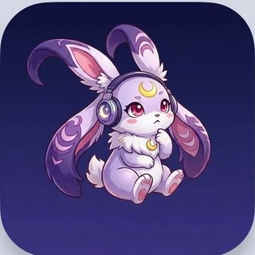

Your Local & NAS Lossless Music.
Zero Server Required.
本地与 NAS 无损音乐播放器
无需部署服务端，开箱即听
Stream FLAC & Hi-Res directly from Local folders, SMB, WebDAV, NFS, and SFTP — or connect Navidrome, Jellyfin, Emby, and Plex. Browse by source, filter the queue, follow word-timed lyrics, and extend it with community plugins. Built for 100,000+ track libraries with gapless playback, WASAPI bit-perfect output, and LAN Connect. 直接播放本机文件夹、SMB、WebDAV、NFS、SFTP 上的无损曲库，同时无缝接入 Navidrome / OpenSubsonic / Jellyfin / Emby / Plex。按音源浏览、筛选播放队列、跟上逐字歌词，还可以安装社区插件扩展音源。10 万首曲库 0.3 秒冷启动，支持样本级无缝播放、WASAPI 独占比特完美输出与局域网跨设备遥控。

Built for Listeners Who Own Their Music为真正拥有音乐库的人而生
Everything you expect from a modern flagship player — without cloud lock-in or mandatory server maintenance.兼顾发烧级音质、十万级曲库性能与精致跨端体验，无需被任何云服务绑定。
Zero-Server NAS Direct Play免部署直连 NAS 与媒体服务器
Play directly from Local folders, SMB, WebDAV, NFSv3, and SFTP with LAN auto-discovery (mDNS / WS-Discovery / SSDP) and automatic Home/Away failover — plus native OpenSubsonic, Jellyfin, Emby, and Plex support.原生直连本机、SMB、WebDAV、NFSv3、SFTP，内置局域网自动发现与内外网故障切换，同时支持 OpenSubsonic（Navidrome）、Jellyfin、Emby 与 Plex。
Audiophile Rust Core发烧级 Rust 音频引擎
100,000+ tracks cold start in ~0.3s at 120 fps. Sample-accurate gapless playback, Windows WASAPI bit-perfect exclusive mode, ReplayGain, 10-band EQ with headphone presets, and Last.fm / ListenBrainz scrobbling.10 万首大曲库 ~0.3 秒冷启动、120 fps 流畅滚动；样本级无缝播放、Windows WASAPI 独占逐位一致输出、ReplayGain、10 段均衡器与耳机预设。
Zero-Key Artwork & Lyrics免 API Key 封面与双语歌词
Cascading 5 artwork sources (Cover Art Archive, iTunes JP/Global, Deezer, VocaDB, MusicBrainz) & 4 lyrics sources (LRCLIB, etc.), CJK per-locale font fallback, word-by-word karaoke, and Windows native floating desktop lyrics.内置 5 封面源 + 4 歌词源（含日区 iTunes、VocaDB 与翻译歌词），支持中日韩分语种字体回退、逐字卡拉 OK 与 Windows 原生桌面悬浮歌词。
Unified Library & Dedup统一资料库与低音质去重
Automatically merges identical tracks across local files, NAS shares, and media servers, always picking the highest quality — with one-click cleanup of lower-quality duplicates.同一首歌在本地、NAS 与多个服务器上的副本自动合并择优；支持在重复歌曲检查中一键删除低音质版本并释放空间。
LAN Connect & Serverless Sync局域网遥控与无服务器同步
Discover and pair devices on your LAN to remote-control playback, hand off queues, and stream missing tracks. Sync favorites, playlists, and play history across devices via any shared folder.局域网设备配对后可互相遥控播放、一键接力队列并串流缺失曲目；通过本地或 NAS 共享目录实现去中心化多设备同步。
Privacy-First & Extensible隐私优先与开放插件
MPL-2.0 open source, zero accounts, zero tracking, zero ads, no Google Play Services. Includes Vinyl & Cassette now-playing styles, Liquid Glass UI, and a local JS plugin host with a community catalog.MPL-2.0 开源，无账号、无遥测、无广告、无 Google 服务依赖；支持黑胶/磁带播放页、液态玻璃风格与本地 JS 插件宿主，可浏览社区插件目录。
Source-First Library按音源浏览资料库
Tap the Library title to switch between local storage, NAS shares, and plugins. Album and artist pages, folders, and playback queues follow the selected source — and the home or library empty state adds one in a single tap.点击资料库标题即可在本地存储、NAS 共享与插件之间切换；专辑/艺人页、文件夹和播放队列都跟随当前音源。首页或曲库空状态可一键进入添加流程。
Filters, Search & Queue Control筛选、搜索与队列控制
Filter the queue, play a match, or move it to play next; clear duplicates and upcoming tracks. When local search is empty, search enabled online sources with the same keyword; settings search jumps straight to the control you need.播放队列可筛选、播放匹配项或下一首播放，也能清理重复与未播放曲目。本地搜索无结果时可沿用关键词搜索已启用的在线音源；设置搜索会直接滚动并高亮目标控件。
Lyrics, Exports & Video歌词、导出与视频
Read local WebVTT, QRC, YRC, and KRC lyrics with word timing, QQ Music lookup, duet stages, and facing pages. Export tracks or albums with artwork and lyrics, and open video sources in a dedicated player on macOS and Android.支持带逐字时间的 WebVTT、QRC、YRC、KRC 歌词，内置 QQ 音乐源、对唱舞台与对开页；曲目/专辑可按模板导出封面与歌词，macOS 和 Android 支持在独立播放器里打开视频音源。

Community Plugins社区插件
Lekis Music supports a rich and diverse plugin ecosystem. Local JavaScript plugins can extend online sources, lyrics, artwork and exports — install from a .zip or an HTTPS link and manage permissions in Settings.月兔音乐支持丰富多样的插件生态。本地 JavaScript 插件可以扩展在线音源、歌词、封面与导出能力——支持从 .zip 或 HTTPS 链接安装，并在设置里管理权限。
A plugin host, not a walled garden开放的插件宿主
Plugins run in a permissioned local JavaScript sandbox and can add new online sources, lyric providers, artwork lookups and export helpers. Browse the built-in catalog, add your own HTTPS catalog sources, or install a package from .zip or an HTTPS link — nothing is installed unless you confirm it.插件运行在带权限控制的本地 JavaScript 沙箱中，可扩展在线音源、歌词来源、封面查询与导出能力。可以浏览内置社区目录、添加自己的 HTTPS 插件源，也可以从 .zip 或 HTTPS 链接安装——未经确认不会安装任何内容。
Plugins are optional: local folders, NAS shares and media servers work without any plugin.插件是可选的：本地文件夹、NAS 共享和媒体服务器无需插件即可播放。
Please read before installing安装前请知悉
- Made by the community. Plugins are not official Lekis Music features and are not provided, reviewed, or supported by the project.均由社区制作。插件不是月兔音乐官方功能，也不由本项目提供、审核或提供支持。
- No affiliation with rights holders. Lekis Music and any content rights holder are not affiliated with, do not endorse, and are not connected to these plugins.与权益方无关。月兔音乐与任何内容权益方均与这些插件没有隶属、合作或背书关系。
- Responsibility stays with the author. The plugin author and the respective providers are responsible for the content and services the plugin offers.责任由插件作者承担。插件提供的内容与服务由插件作者和相应提供方负责。
- Verify the source, version, and license before installing, and only use plugins you trust.安装前请自行确认来源、版本与许可，只使用你信任的插件。
Download Lekis Music下载月兔音乐
Latest: v0.5.1 (Alpha preview, 2026-11-24). Built by GitHub Actions with SHA-256 checksums.最新版本：v0.5.1（Alpha 预览版，2026-11-24），由 GitHub Actions 自动构建并附带 SHA-256 校验和。
✦ New in 0.5.1: proactive update reminders and custom plugin sources — get a prompt when a new version is available (update, postpone, or ignore that version), and add your own HTTPS plugin catalogs alongside the built-in community source.✦ 0.5.1 新增：新版主动提醒与自定义插件源——发现新版本时主动提示，可立即更新、稍后或忽略该版本；插件页还可添加自己的 HTTPS 插件目录，与内置社区源并列浏览。
Why "Lekis" (月兔音乐)?为什么叫「月兔音乐 / Lekis」？
Inspired by Lekismon (レキスモン) and the Rex rabbit — crafted to feel swift, lightweight, and luminous under moonlight. 灵感源自雷克斯兽（Lekismon / レキスモン）与雷克斯兔（Rex rabbit），希望它像月下奔跑的兔影一样轻盈、敏捷而通透。
Frequently Asked Questions常见问题
Do I need to deploy a server like Navidrome or Plex?使用月兔音乐必须在 NAS 上部署服务端吗？
No. Lekis Music plays directly from local folders or NAS shares over SMB, WebDAV, NFS, and SFTP with zero server software. If you already run Navidrome (OpenSubsonic), Jellyfin, Emby, or Plex, it connects to them natively too.不需要。你可以直接通过 SMB / WebDAV / NFS / SFTP 播放 NAS 或本机曲库；如果你已经部署了 Navidrome、Jellyfin、Emby 或 Plex，也能原生接入并与本地曲库统一管理。
Is Lekis Music free, open-source, and private?是免费开源的吗？会收集我的数据吗？
Yes. Licensed under MPL-2.0 with zero ads, zero accounts, and zero telemetry. All library data stays on your device, and credentials are stored in your OS keystore.是的，采用 MPL-2.0 开源协议，无广告、无账号、无遥测。所有曲库数据与设置均保存在本地，凭据由系统钥匙串加密存储。
How do I report bugs or follow updates?遇到 Bug 怎么反馈？怎么关注后续更新？
Open an issue on GitHub (aoxzh/lekis-music/issues) or follow @aoxzh on X. You can also check for updates right inside Settings → About.欢迎前往 GitHub Issues 反馈问题或提建议，也欢迎关注作者的 X（@aoxzh），应用内「设置 → 关于」也内置了检查更新。
Are the plugins official? Who is responsible for them?插件是官方的吗？由谁负责？
No. Plugins are made and maintained by third-party community contributors and are not provided or supported by Lekis Music. Neither Lekis Music nor any content rights holder is affiliated with, endorses, or is connected to them; the plugin author and the respective providers are responsible for the content and services.不是。插件均由社区第三方制作和维护，不由月兔音乐提供或支持。月兔音乐与任何内容权益方均与插件没有隶属、合作或背书关系；插件的内容与服务由插件作者和相应提供方负责。
Do I need plugins to play my music?不装插件就不能播放音乐吗？
No. Local folders, NAS shares, and media servers work without any plugin. Plugins are optional and only add online sources; install them from Settings → Advanced → Plugins or Add Source → Import an online source.不需要。本地文件夹、NAS 共享和媒体服务器无需插件即可播放；插件是可选的，只用于增加在线音源。可在「设置 → 高级 → 插件」或「添加音源 → 导入在线音源」中安装。